SOLi
A 3D animated short film.
SOLi is a 3D animated short film made in Blender for the Computer Animation class at Politecnico di Milano, BA in Communication Design, during Italy's 2020 lockdown.
1. Story
Everything started with the script. During the writing process, a series of choices were made to simplify the work in the subsequent phases as much as possible. One of these was the fact that all characters had to wear a helmet. This trick, in addition to being perfectly consistent with the narrative, has spared us the need to animate the faces of the characters. Another choice that simplified our work was to choose a very desolate setting, which reduced the number of models needed to populate the various environments. However, this is not to say that the short was written with the sole intention of minimizing the difficulties. Despite all of these precautions, in fact, the project quickly turned into something much bigger than we had originally imagined.
2. Concept
After the story was finished, we quickly started brainstorming and gathering references for what the design of the characters could be.
We landed on a mix between an astronaut and a diver. We really loved the analog quality and the sense of oppression of old diving suits
and the cleaner shapes and bright colors from the astronauts suits.
The orange color for the suits was chosen primarily to contrast the gray background.
In addition, the orange also refers to the overalls that prisoners often wear, mainly in the USA.
For the architecture design we drew a lot of inspiration from Bernd and Hilla Becher’s photographs. The Control Tower is inspired by one of their series called Water Towers and the Abandoned Factory from another one called Coal Deposits.
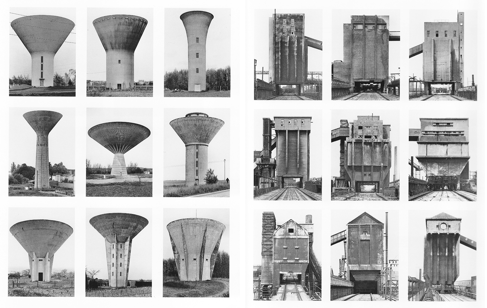 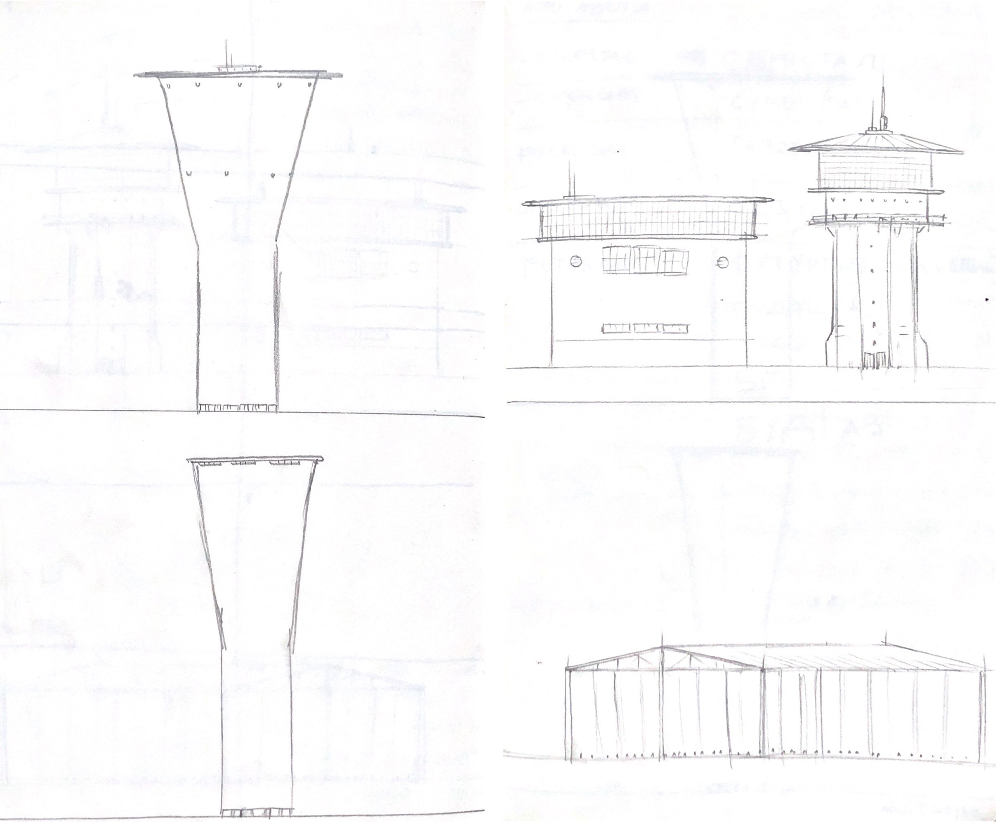We also found russian a photographer called Danila Tkachenko whose photos from her series called Restricted Areas depicting abandoned Soviet facilities immersed in fog, really fitted our concept for the environment.


Later in development, we realised that we needed something to make the suits more unique, so we thought to add the logo of the company the characters are working for on the chest. We named the company Futurgas, implying that it is an energy corporation specialized in natural gas extraction, and we decided to write it in Cyrillic to give it a weird but belivable look. Also, a dystopian Russian land perfectly fitted the mood we were after.
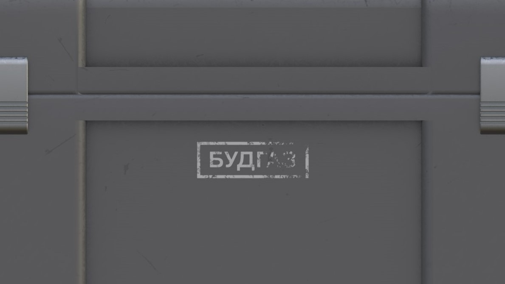3. Storyboard and Animatic
To get a better sense of what will actually have to happen on screen, we storyboarded every shot. It’s not a very meticulous work, but it perfectly serves the purpose to illustrate the frame composition, the blocking of the characters and the relations to the environment.
At the beginning we also developed the animatics for the first scenes, to better understand timing and camera movement. We eventually didn’t realize the animatic for every scene, due to time constraints, and because we realized that for most scenes the storyboard alone was enough.
4. Modeling
We immediately started modeling the buildings (control tower, shed, factory, container house) and the assets (toolbox, tool) that we knew would be
less demanding than the character. We used Quixel Bridge to download some models to enrich some environments.
The modeling of the character started with the helmet and then moved on to the body. The anatomy was first defined and then some primitives were
superimposed to form the basis shape of the suit. The ripples of the fabric were achieved using the Cloth Brush, available in Blender 2.83 (in alpha at the time).
The stitchings and the logo were added working on the UV maps of the character, following this tutorial.
 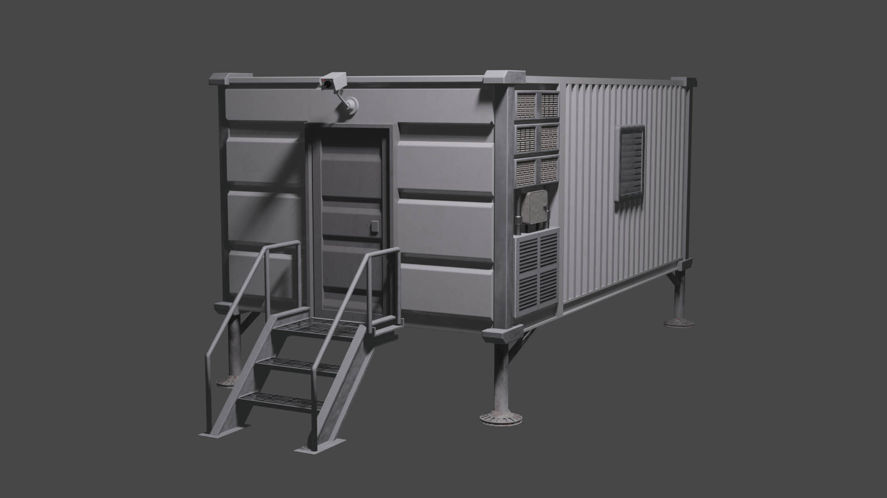
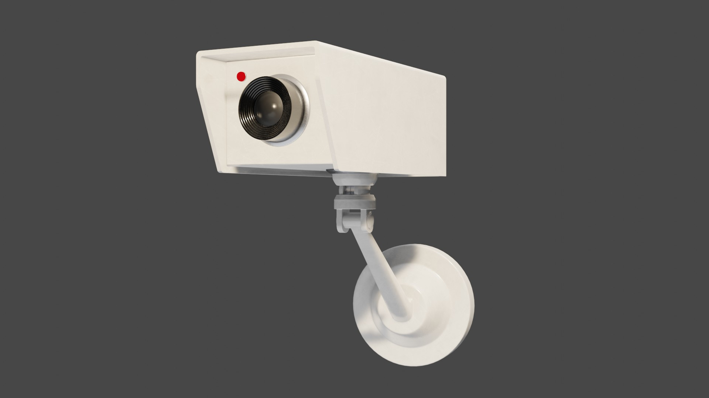
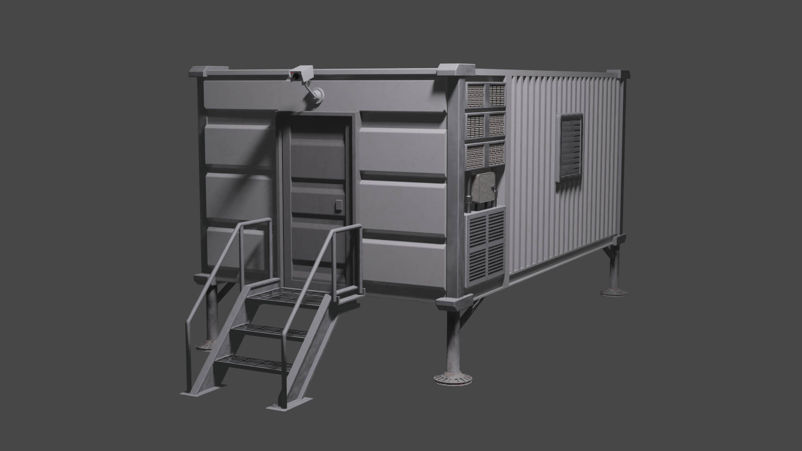
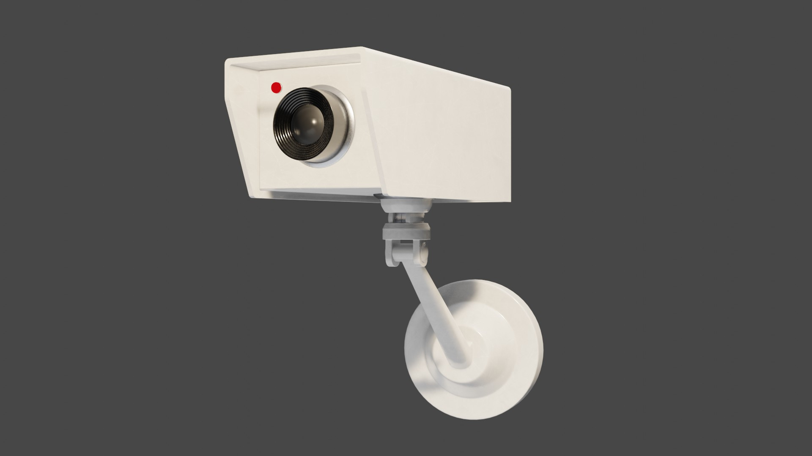
5. Shading
For the material we heavily relied on Quixel Bridge, which contains a very large library of PBR materials, and on other sources like textures.com, texturehaven.com, 3dtextures.me, cgbookcase.com and cc0textures.com. A particular need we had was to make a material to use for the ground, entirely made of concrete. Due to the enormous size of it, all the materials we found had very evident repetition problems. To solve this we mixed two different textures and acted on the rotation of the tiles and the color variation based on this tutorial.
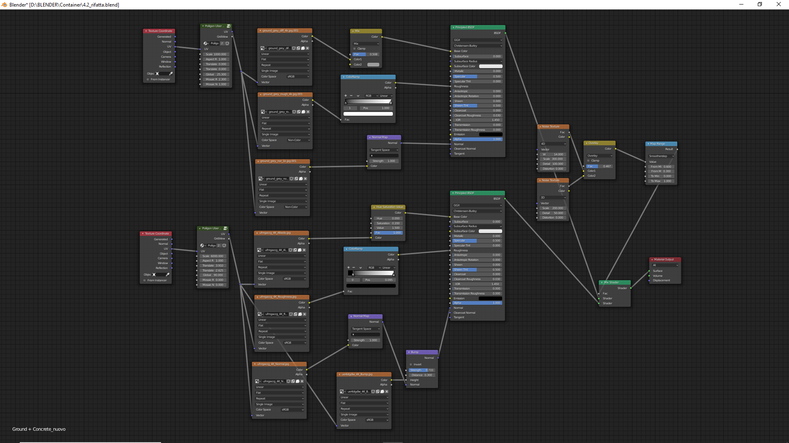6. Retopology and Rigging
When we started working on the project we actually didn't have a clue on what retopology even meant. With retopology (as we discovered) we mean the act of simplifying and harmonizing the geometry of a character's model, so as to make it easily deformable and more suitable for animation. After various ups and downs in trying to understand how to do it, it basically requires to reconstruct the character using rectangular faces, using the existing model as a guide. The new character, despite having the same shapes as the old one, has a much lower number of polygons and the quadrangular faces allow for excellent deformation. The last step is to transfer all the details lost in the simplification of the model (especially for the folds of the suit), by creating a normal map, to be applied to the new model. For the creation of the character rig we used the Rigify addon included in Blender. After adapting the rig to the features of each of the two characters and eliminating the unnecessary bones (facial and some fingers), we generated the rig. Finally, we brought the IK Stretch of hands and feet to zero to avoid unnatural and unwanted stretching of the character when moving hands and feet with the inverse kinematics. For this process we follwed this tutorial.
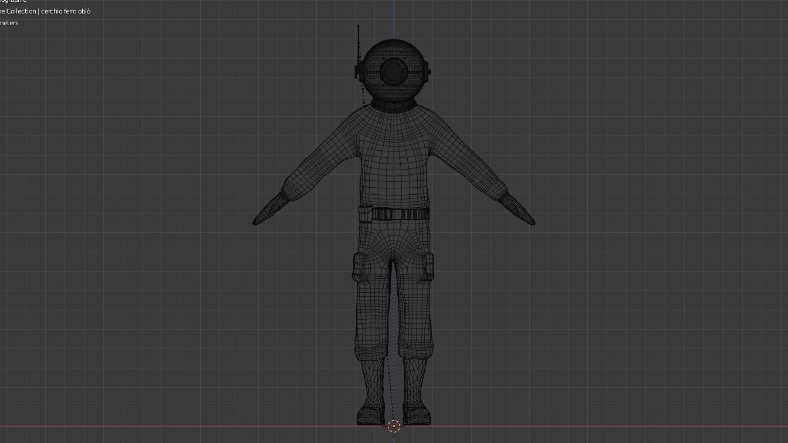 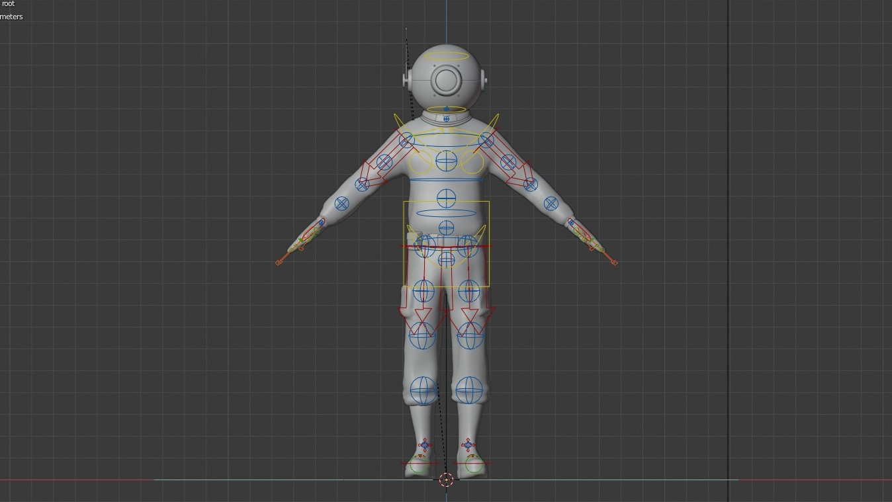7. Animation
The animation process was by far the longest one. In this case, it wasn’t hard to understand how to achieve what we wanted (although the
Non Linear Animation Editor remains a mystery to this day), but it was the time it took, that surprised us. Despite having made a lot of
choices during writing, to simplify the action as much as possible, we still ended up with a ton of things to animate. We spent about a
month animating all the actions of the two main characters. On rare occasions, we were able to save some time, saving an action in the action
editor and reusing it (the walk cycle for example), but most of the time every action in the short needed to be unique. In some cases, especially
for crowd animations, we used Mixamo, a service that allows you to download well-made
mocap animations for free.
To collaborate more efficiently with each other, we created a shot list on a Google spreadsheet, in order to keep an eye on who was doing what and how much work was still left to do.
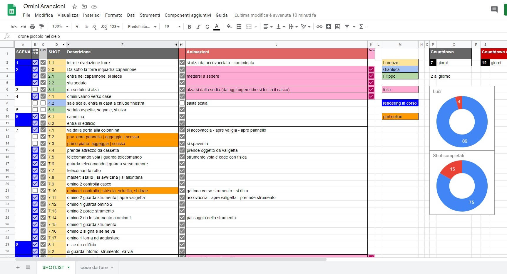8. Directing and Cinematography
The cinematography highlights the isolation of the characters, often making them appear very small and very distant from each other. Camera movements are very limited for most of the short. The aspect ratio used is 2,4:1 (1920x800) and was chosen to highlight the vastness of the environments and to have a more cinematic look. The lighting choices in outdoor environments were influenced by the presence of the volumetric fog, which amplifies and diffuses each light source. The fog is contained within a very large cube domain and is obtained through a mix of two Principled Volume materials, one for a more rarefied fog at high altitude and one for a denser one, close to the ground. For the realization of the sun in the sunset scenes, it was used a very bright Spot Light instead of the usual Sun Light, which did not guarantee the presence of the solar disk.
9. Rendering
All the shots were rendered using the Eevee rendering engine, one of the new features of Blender 2.8. We can easily say that this rendering engine is one of the main reasons we were able to make this film. It would have been unthinkable to develop it using Cycles, because of our obvious technical limitations (we mostly worked on laptops). The possibility of having an (almost) instantaneous preview of the rendered view allowed us to work faster and take better creative decisions. On the other hand, using a biased rendering engine meant having to spend time on backing indirect lighting and doing all sorts of little cheats here and there, to make the shots feel realistic. One of the problems we soon realised was that (as of summer 2020) Eevee does not support object driven motion blur, but only camera motion blur. Motion blur is essential (especially in action scenes) to add that bit of realism that makes a scene feel like it was shot on a real camera. Fortunately we found an add-on that allows Eevee to render object motion blur, but since it requires a lot more render time, we decided to use it only when the scene really required it.
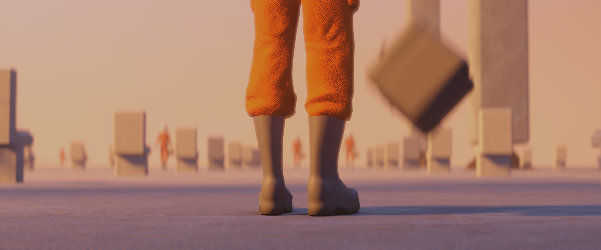10. Editing and Sound
The editing phase was more an assembly of parts than a creative process, as most of the choices of timing and rhythm had been previously
calculated in order to avoid wasting time in creating scenes that would have risked being cut.
As for the post-processing, grain was added
to simulate film and a slight distortion of the image was added in order to get closer to the effect that would be obtained using anamorphic lenses.
A part of the work that we hadn't foreseen at all for the amount of time required was the soundtracking of all the scenes (foley). For the sound effects, in addition to recording some of them ourselves, we used freesound.org, which collects a large amount of free sounds. For the music we have chosen almost exclusively pieces played by a carillon, which contrasts the cold and desolate scenario with its warm and reassuring melodies.
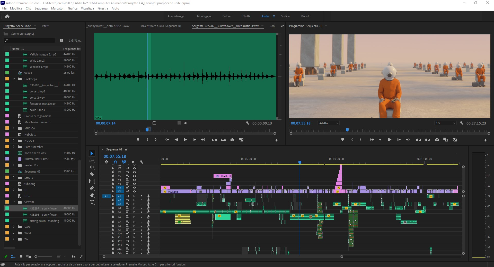 👋2020 — Lorenzo Bernini (design), Gianluca Locatelli (coding).